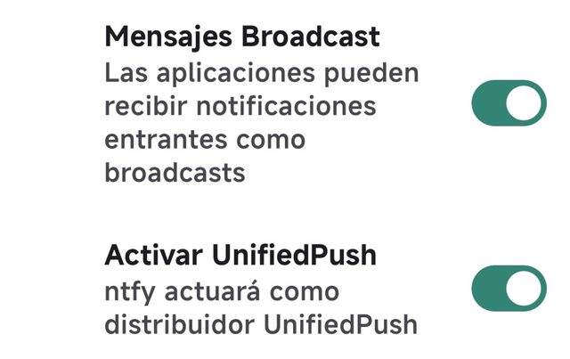

رسائل SMS ومكالمات تلقائية
دليل خطوة بخطوة لـ Android (ntfy + MacroDroid)
مهم. هذه ميزة إضافية لـ Android تعدّها وتصونها بنفسك: وهي ليست خدمة طوارئ ولا تغني عن رقم الطوارئ المحلي في بلدك. وتعتمد على الإنترنت والبطارية وعلى ألا يغلق Android التطبيقات. اختبرها دائمًا قبل الاعتماد عليها، وأعد اختبارها بعد تحديث هاتفك أو تغيير إعدادات البطارية.
ماذا ستحصل عليه
عندما تكتشف الساعة سقوطًا أو تضغط SOS، يرسل هاتفك تلقائيًا رسالة SMS تتضمن جملة ورابط موقعك (وإن شئت يجري مكالمة) إلى الشخص الذي تختاره. لا تستطيع الساعة إرسال رسائل SMS بنفسها (لا يسمح بذلك Zepp OS)، لذا يكون المسار: الساعة ← تطبيق Zepp على الهاتف ← ntfy (تنبيه فوري) ← MacroDroid ← رسالة SMS.
ما تحتاج إليه: هاتف Android عليه تطبيق Zepp مع SOS Impact مضبوطًا، وتطبيق ntfy المجاني، وتطبيق MacroDroid (تكفي النسخة المجانية لماكرو واحد). على iPhone لا يمكن أتمتة رسائل SMS: استخدم هناك تيليجرام أو ntfy.
- فعّل ntfy في SOS Impact. في تطبيق Zepp افتح إعدادات SOS Impact، وابحث عن مربع تنبيه ntfy واضغط تفعيل ntfy. سيظهر موضوع سري يشبه
sosimpact-…. اضغط إرسال اختبار ntfy وتأكد من ظهور «تم إرسال الاختبار إلى ntfy». انسخ الموضوع: ستستخدمه في الخطوتين 2 و4. لا تنشره: فأي شخص يعرفه يستطيع قراءة تنبيهاتك.
إعدادات SOS Impact في تطبيق Zepp: مربع «تنبيه ntfy» مع الموضوع السري وزر «إرسال اختبار عبر ntfy». (صورة توضيحية.) - ثبّت تطبيق ntfy واشترك فيه. ثبّت ntfy (من Google Play أو F-Droid)، واضغط + واكتب الموضوع من الخطوة 1 (الخادم ntfy.sh ما لم تستخدم خادمك الخاص). يجب أن يصل إشعار عند إرسال الاختبار. وإذا لم يصل شيء فتأكد من أن الموضوع مكتوب مطابقًا تمامًا.

شاشة «الاشتراك في موضوع» في ntfy (اللقطة باللغة الإسبانية): اكتب موضوعك (مموّه هنا) واضغط اشتراك. - فعّل «Broadcast messages» في ntfy. في ntfy: ⋮ ← الإعدادات ← انزل إلى Broadcast messages (بث الرسائل) وفعّله. بدون ذلك لا يُخطر ntfy تطبيق MacroDroid.

إعدادات ntfy: «بث الرسائل» مفعّل (اللقطة باللغة الإسبانية). - أنشئ الماكرو في MacroDroid: المشغّل. Macros ← + ← Triggers ← Device/Applications ← Intent Received. املأ ما يلي:
الحقل القيمة Action io.heckel.ntfy.MESSAGE_RECEIVEDPackage (إذا ظهر الحقل) io.heckel.ntfyIntent Extra 1 — الاسم topicIntent Extra 1 — القيمة المطلوب مطابقتها موضوعك فقط، مثل sosimpact-abc123(دون «topic=» ودون مسافات)Intent Extra 2 — الاسم titleIntent Extra 2 — القيمة المطلوب مطابقتها ?*(حرف واحد على الأقل: لكي يعمل الماكرو مع التنبيه الأول الذي له عنوان فقط وليس مع الرسائل اللاحقة)Intent Extra 2 — الحفظ في متغيّر اضغط + وأنشئ متغيّرًا نصيًا اسمه tituloالخطأ الأكثر شيوعًا هو كتابة كلمة أخرى كاسم للـ Extra، أو وضع
topic=قبل القيمة: يجب أن يكون الاسمtopicتمامًا.
شاشة «Intent مستلم» مع الإضافتين: topicبموضوعك وtitleمحفوظ في المتغيرtitulo. اكتب في قيمةtitleالعلامة?*(حرف واحد على الأقل)؛ وإذا كتبت*فقط كما في هذه الصورة التوضيحية فسيعمل الماكرو أيضًا مع الرسائل اللاحقة. اترك خيار «تفعيل المطابقة بالتعبيرات النمطية» غير محدد. (صورة توضيحية.) - الإجراء: إرسال رسالة SMS. Actions ← Send SMS. اختر جهة الاتصال أو اكتب الرقم، وكنص ضع المتغيّر فقط
[lv=titulo]: فهو يحتوي أصلًا على جملة التنبيه ورابط موقعك (أو يذكر أن الموقع غير متاح). أدرجه بزر «...» في حقل النص ← Local variables ←titulo؛ يُكتب بين أقواس مربعة[ ]لا معقوفة{ }. يمكنك إضافة جملة من عندك قبله. وإن شئت أضف إجراء Call إلى الرقم نفسه بعد رسالة SMS.![إجراء إرسال SMS في MacroDroid بالنص [lv=titulo]](../img/macro-sms.jpg)
إجراء «إرسال SMS»: اختر الشريحة التي لديها تغطية (إذا اخترت شريحة «بدون خدمة» فسيفشل الإرسال)، واكتب الرقم، وكنص اكتب عبارتك متبوعة بـ [lv=titulo]. (صورة توضيحية؛ الرقم مخفي.)
الماكرو بعد اكتماله: مشغّل «Intent Received» والإجراءات تحته (مكالمة ورسالة SMS)، واللقطة باللغة الإسبانية. اسم جهة الاتصال مموّه. - امنح الأذونات. سيطلب MacroDroid إذن SMS والهاتف: وافق. وإذا ثبّتّ MacroDroid من خارج Google Play وحظرها Android، فاذهب إلى إعدادات الهاتف ← التطبيقات ← MacroDroid ← ⋮ واضغط Allow restricted settings (السماح بالإعدادات المقيّدة).
- امنع Android من إغلاق التطبيقات. إعدادات الهاتف ← التطبيقات ← ntfy وMacroDroid ← البطارية ← غير مقيّد (أو «عدم التحسين»). وفي بعض العلامات التجارية (Xiaomi وHuawei وSamsung…) فعّل أيضًا «التشغيل التلقائي» أو «قفل في التطبيقات الأخيرة». ويمكنك في ntfy كتم الموضوع حتى لا يرنّ مرتين (فرسالة SMS تنبّه أصلًا).
- اختبره. أولًا بزر إرسال اختبار ntfy في SOS Impact، ثم بـ SOS يدوي على الساعة. يجب أن تصل رسالة SMS مع الرابط. وفي MacroDroid سيظهر على الماكرو «نُفّذ قبل بضع ثوانٍ». أخبر جهة الاتصال مسبقًا بأنك تجري اختبارًا.
إذا لم يعمل
| العَرَض | ما يجب التحقق منه |
|---|---|
| يقول الماكرو «نُفّذ قبل ساعات» ولا يتغيّر | التنبيه لا يصل إليه: تحقق من الخطوتين 3 (Broadcast) و4 (اسم الـ Extra هو topic والقيمة دون «topic=» والـ Package) ومن أن ntfy مشترك في الموضوع. |
| يعمل لكن لا تُرسل رسالة SMS | إذن SMS (الخطوة 6) وشريحة SIM فيها رصيد/رسائل ورقم مكتوب بشكل صحيح. |
| رسالة SMS بلا رابط | لم يحمل التنبيه موقعًا (لم تحصل الساعة على GPS، أو هو اختبار ntfy الذي لا يحمل موقعًا). تُرسل الرسالة رغم ذلك وتذكر أن الموقع غير متاح. |
تظهر في الرسالة العبارة {lv=titulo} | كتبتَ أقواسًا معقوفة بدل المربعة. احذفها وأدرج المتغيّر بزر «...» (يصبح [lv=titulo]). |
| يعمل لفترة ثم يتوقف | يضع Android التطبيقات في وضع السكون: تحقق من الخطوة 7 وأعد الاختبار. |
| أريد التوقف عن استخدامه | في SOS Impact اضغط إيقاف ntfy واحذف الماكرو والاشتراك في ntfy. |
| خطأ «sms sending» عند اختبار الإجراء | اختر في الإجراء الشريحة التي لديها تغطية (وليس شريحة «بدون خدمة»). جرّب نصًا ثابتًا مثل «تجربة»؛ فإذا نجح فالمشكلة في نص المتغير. |
الخصوصية
يمر تنبيه ntfy عبر خادم ntfy.sh (أو خادمك) والموضوع السري هو «كلمة المرور» الوحيدة: لا تشاركه، وغيّره (إيقاف ← تفعيل) إذا ظننت أنه تسرّب. وتُرسل رسالة SMS من هاتفك نفسه عبر مشغّل الاتصالات الخاص بك. ولمزيد من الخصوصية يمكنك استخدام خادم ntfy خاص بك (حقل خادم ntfy).